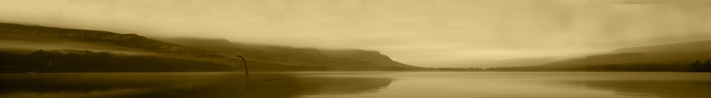
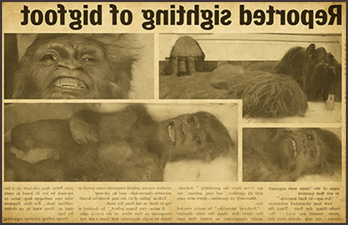
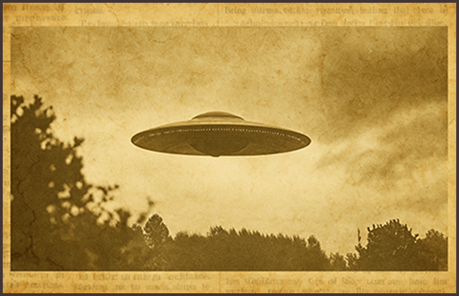
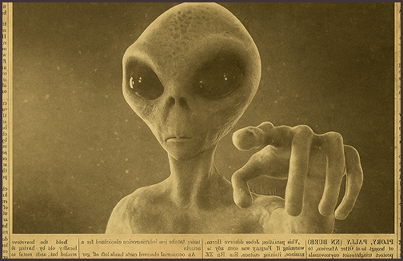

ДОБРО ПОЖАЛОВАТЬ!
О проекте
Официальные карты лгут. Они скрывают Иную Россию — не для туристов и геологов. Её территория — это мертвая зыбь болот, непроглядная чаща лесов и темнота озёр, где не действуют наши законы.
Почему наука так яростно отрицает криптидов? Слишком много совпадений. Следы «снежного человека» ведут в зоны, закрытые для посещения. Вспышки НЛО учащаются над секретными объектами. Чупакабра «охотится» там, где десятилетия назад ставили биологические эксперименты.
Что, если это не аномалии, а следы? Или — доказательства того, что мы здесь не единственные хозяева. И нас целенаправленно убеждают не замечать того, что прячется в нашей же глуши.
Этот архив — для тех, кто смотрит не на карту, а под неё. Факты — только верхний слой. Истина — в паттернах, которые складываются в ужасающую картину сокрытия.
Архив Сокрытого. Включите критическое мышление. Позвольте себе усомниться.
А вы знали?
Что советские архивы скрывают дело «Капитана и Каптара»?
В 1959 году военная альпинистка Жанна Кофман вела на Кавказе секретную миссию по поиску «каптара» — местного йети. Почему КГБ интересовался снежным человеком? И что «действительно» нашла экспедиция в тех горах?
Полная версия этой истории — в нашем расследовании «17 засекреченных экспедиций СССР».

Что же делать?
Осенью 2025-го огненный объект над Москвой заставил замолчать всех. Молчание — лучшая маскировка. Пока вы ждали объяснений, чистили архивы и готовили удобную версию. Алгоритм прост: тишина → путаница → скепсис. Ваша задача — ломать его. Снимите видео, зафиксируйте время. Пока они не стёрли улики.
Узнайте, какие доказательства уже исчезли и как сохранить свои.

Что будет завтра?
Мы сверили старые архивы КГБ с графиком «внезапных учений». Завтра в указанном районе ждите активности. И тишины в СМИ. Это не случайность, а протокол по сокрытию.
Смотрите карту зоны, точное время и присоединяйтесь к нашему прямому эфиру. Узнайте, куда смотреть, пока они не сказали не смотреть.
Давайте раскроем тайну
Вы знаете сценарий: аномалия, гулкая тишина в СМИ, невнятное объяснение. Мы сопоставили старые архивы, данные и «внезапные учения». Присоединяйтесь к прямой трансляции в эпицентре. Получите карту, время и полное досье. Смотрите на небо.
